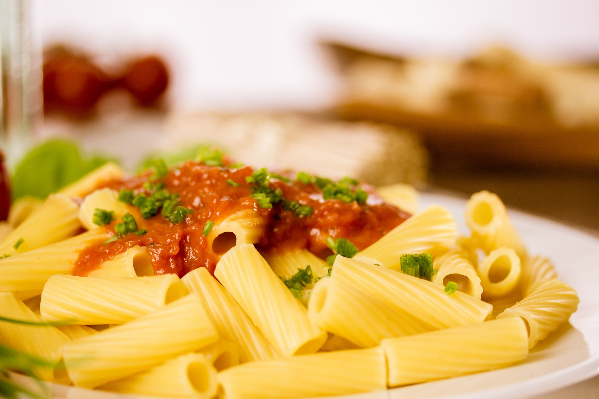

Homemade pasta recipe

Description:
Originating from Italy, pasta has made its fame worldwide from the fact that you can find it almost everywhere and that too with different variations.
It is a type of food typically made from an unleavened dough of wheat flour mixed with water or eggs, and formed into sheets or other shapes, then cooked by boiling or baking.
Rice flour, or legumes such as beans or lentils, are sometimes used in place of wheat flour to yield a different taste and texture.
Today I m making a different variation of it which requires least amount of ingredients to make. So, let's get started......
Ingredients:
for dough:
for pasta:
- finely cut vegetables(carrot, capsicum, onion, cabbage or lettuce)
- ginger-garlic paste
- turmeric powder
- salt to taste
- pepper powder
- chilli(cut into small pieces)
- tomato ketchup
- chilli sauce
- soy sauce
- vinegar
- coriander(for garnishing)
Method:
- crack the eggs and put it in a bowl
- whisk them until they are thoroughly mixed
- now, add the wheat flour to the mixture
- continue mixing with a spatula until a soft dough is formed(use hands if required)
- let the dough rest for 20-30 minutes
- after resting the dough, cut portions of it and roll them into oval like shapes
- now cut the ovals into fine stripes of wqual length with the help of a knife
- sprinkle some flour onto the strips and keep them aside for 10 minutes
- Now, boil the strips for 5 minutes and drain all the water.
- Next, heat some oil in a pan
- Add the vegetables with 1 tsp of salt or as required, saute untill the vegetables are cooked.
- After the vegetables are cooked, add the strips of pasta along with all the sauces and spices
- Cook for another 2-3 minutes or until the spices are cooked
- Garnish with coriander leaves and serve hot
Return to homePage